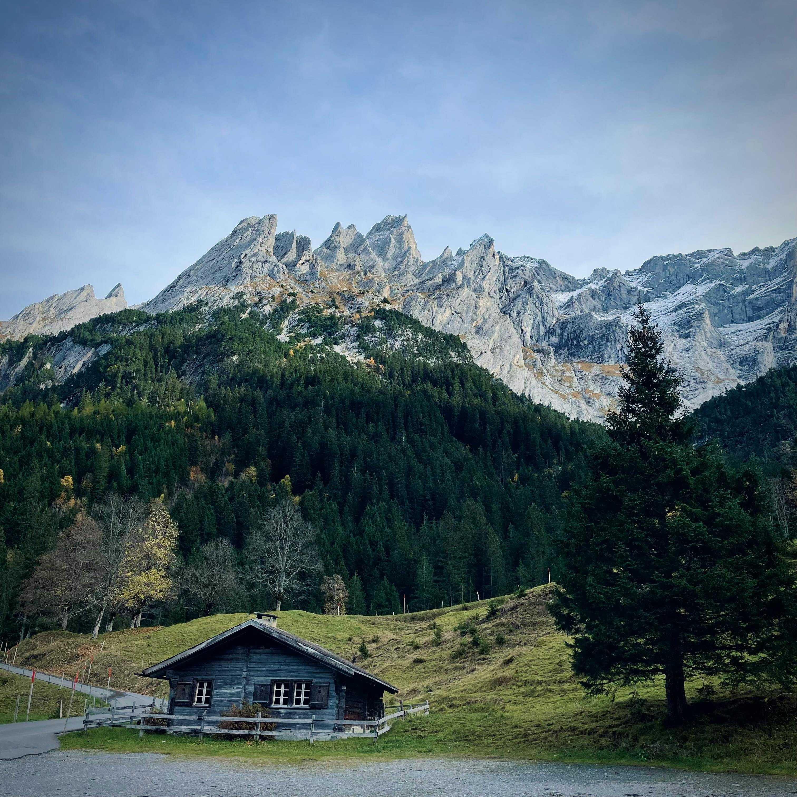

Most visited countries
South America's giant, Brazil is a seductive country with dazzling beaches, tropical islands and picturesque colonial towns.
Known as the ‘Land of the Rising Sun’, Japan is an eclectic mix of past, present, and future, combining an impressive history with a modern-day persona and new world technology.

A land of staggering natural beauty and cultural complexities, of dynamic megacities and hill-tribe villages, Vietnam is unforgettably compelling.

With dramatic alpine scenery, heartwarming local food, historic towns, and world-famous cities, Switzerland has something for everyone.